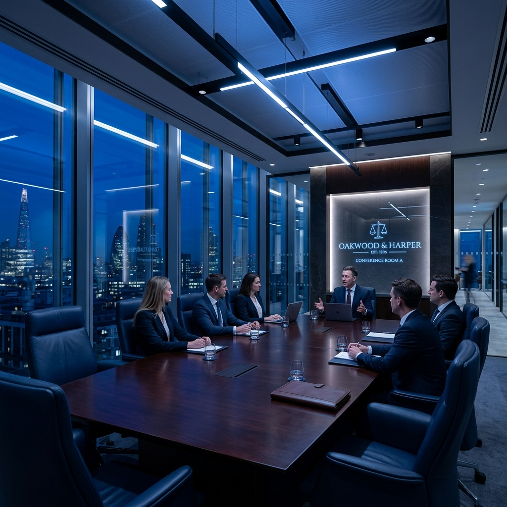

PRECISION
정확성문서와 진술, 숫자와 시간을 하나의 사실관계로 연결합니다.
PRACTICE ARCHITECTURE
법률·사실·숫자·절차를 함께 검토하는 호경의 여섯 업무분야입니다.

ABOUT HOKYUNG
법무법인 호경이 사건을 바라보고 수행하는 기준을 소개합니다.
PHILOSOPHY
법률서비스의 품질은
법무법인 호경은 의뢰인의 문제를 하나의 사건번호로 보지 않습니다.
법률관계와 사실관계, 금액과 거래구조, 시간과 비용, 그리고 의뢰인이 지키려는 삶과 사업을 함께 놓고 판단합니다.
불확실한 부분은 불확실하다고 설명하고, 확인 가능한 자료를 바탕으로 선택지를 비교하며, 결정 이후에는 실행 과정을 함께합니다.
CORE VALUES
문서와 진술, 숫자와 시간을 하나의 사실관계로 연결합니다.
법적 가능성뿐 아니라 비용, 일정, 실행 가능성을 함께 비교합니다.
결과를 과장하기보다 판단의 근거와 다음 단계를 투명하게 공유합니다.
서울·포항·의정부 세 거점에서 일관된 기준으로 사건을 수행합니다.
BLUE INTELLIGENCE
대표변호사의 변호사·공인회계사·세무사 자격과 회계법인 경험은 기업, 조세, 상속, 회생, 부동산 사건을 입체적으로 보는 기반이 됩니다.
OUR WAY OF WORKING
사건을 맡는 순간부터 끝까지 같은 다섯 가지 질문을 반복합니다.
추정과 기억을 객관자료와 분리합니다.
사건 결과에 영향을 주는 요소를 우선순위로 정리합니다.
금액, 거래, 회계·세무 자료의 일관성을 확인합니다.
협상, 보전, 수사, 소송, 구조조정의 장단점을 비교합니다.
시간과 비용, 생활과 사업에 미치는 영향까지 고려합니다.
PROFESSIONALS
법률·회계·기업·공공기관·법원 실무 경험을 연결해 사건을 검토합니다.
START WITH A CLEAR FIRST STEP
현재 상황과 가장 궁금한 점을 남겨주시면 담당자가 확인 후 상담 절차를 안내합니다.